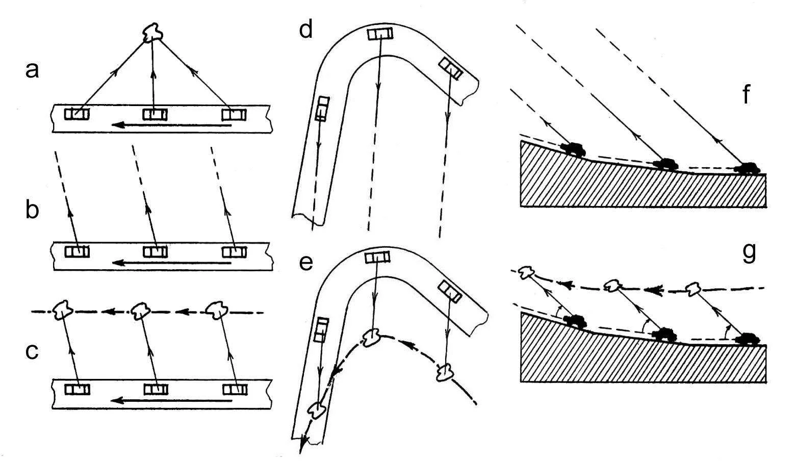
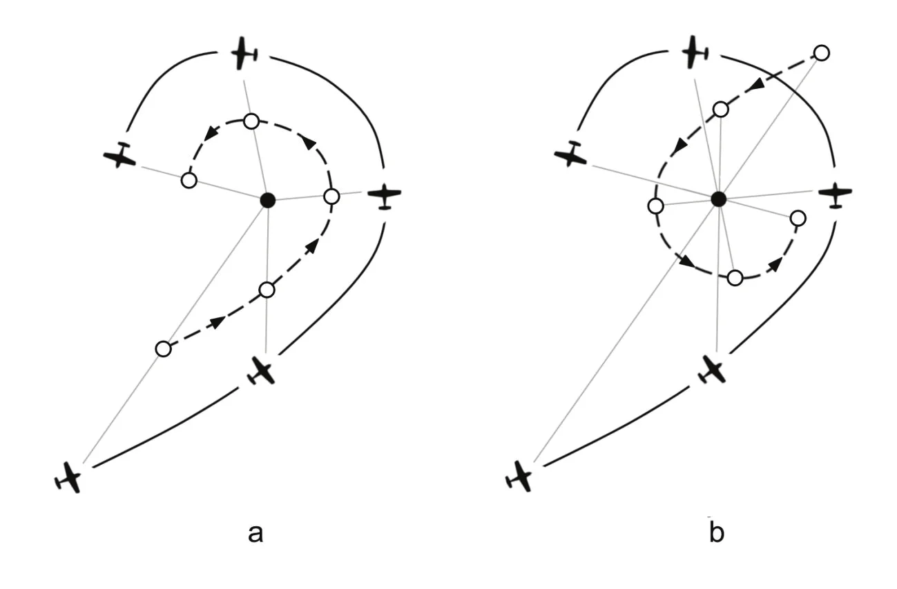
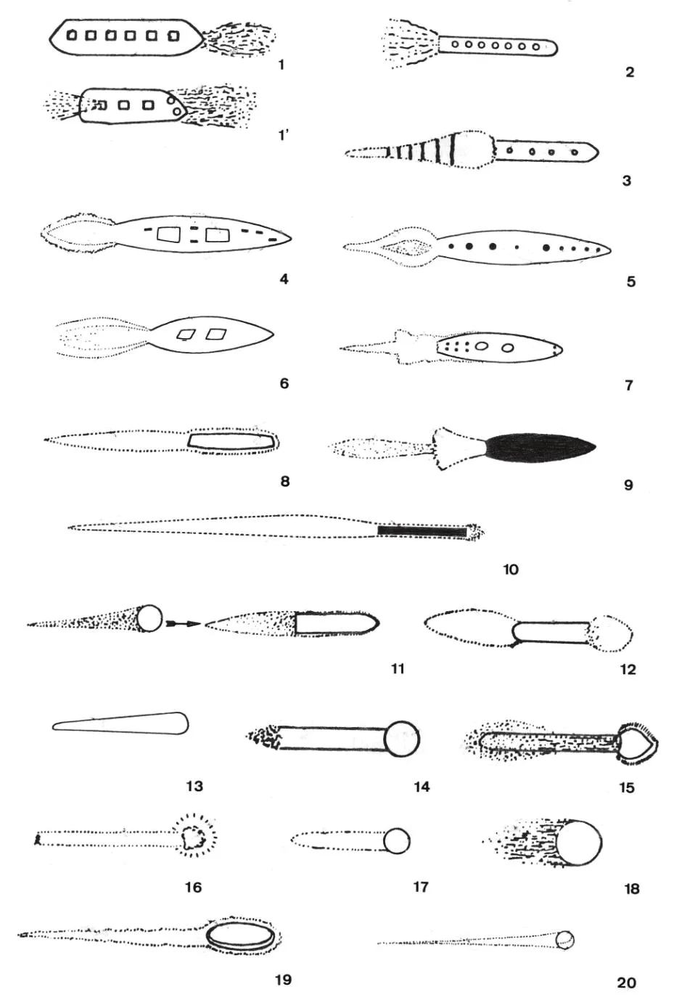
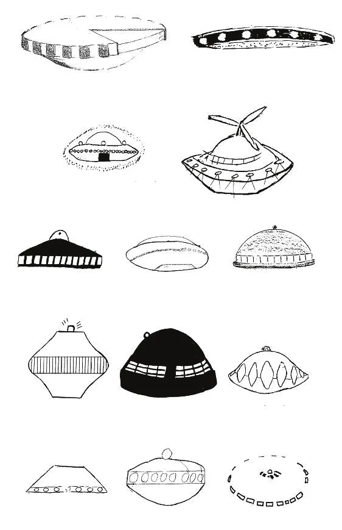

This paper does not deal with alleged inexplicable UFOs—even though reasons to seriously doubt their very existence are also briefly addressed—but with explainable UFO reports existing beyond a shadow of a doubt with massive presence. The uninterrupted flow of those reports constitutes a worldwide social phenomenon keeping alive the UFO myth, an empirical myth of our age. Focusing specifically on the role of perceptual illusions, this paper examines the different types of illusions involved, their incidence in the reported UFO experiences, and their relevance to the myth’s survival. Popular misconceptions about perceptual illusions, raising prejudices against explanations implying misperception, are also reviewed to show their contribution to the myth’s endurance.
Throughout history, people have observed “strange things” in the sky. However, since the mid-20th century, the sky has become increasingly cluttered by potential things to be seen, owing to the development of aeronautics and astronautics. The last 75 years have also witnessed the rise and consolidation of a new trend in western popular culture. Unusual aerial displays are assumed to relate to each other as part of a unique phenomenon and are suspected to involve extraterrestrial visitors. Moreover, besides sightings of unknown objects in the sky, alleged landings of spaceships and even encounters with their crews have been reported. These are the notions permeating the simple question “Do UFOs (unidentified flying objects) exist?” or the more revealing “Do you believe in UFOs?” often eliciting responses like “There is something to it” or “Man is not alone in the universe.”
Is the widespread belief in a so-called “UFO phenomenon” backed by solid evidence? Over the years, there have been various extensive studies of UFO reports with a rational and pragmatic approach by official agencies (e.g., USAF Project Blue Book, in ; or French civilian GEIPAN, nowadays) as well as private initiatives (e.g., Allan Hendry’s investigations under the auspices of CUFOS in the s). Those studies have shared at least one main conclusion: most UFO reports can be satisfactorily explained by ordinary causes, when enough information is available.Nowadays, there seems to be a general agreement among ufologists—except the more gullible ones—that 90% or more of all UFO sightings result in an explanation. It implies that, indeed, a real large-scale phenomenon exists, albeit of a social nature, having the character of a modern myth. This text will focus on this main corpus of evidence (explained cases) to illustrate the relevance of perceptual illusions in the empirical foundations of the social phenomenon. Nevertheless, it is worth looking at the alleged anomalistic nature of the minority of UFO reports remaining unexplained after an in-depth analysis before leaving them aside.
While extreme believers utterly negate the well-known social dimension of the UFO issue, the usual conventional approach still disregards the explained reports to concentrate on the unexplained ones. They try to find the accurate signal amidst the noise, the true UFO phenomenon at the core. Yet, the significance of the “residue” of unexplained cases is far from being established.
Firstly, the mere existence of a small percentage of unexplained cases does not prove the existence of an inexplicable phenomenon. Some explainable UFO files will remain unsolved for several mundane reasons. However, no way exists to know in advance which cases will remain unexplained after a proper evaluation task. No analytical shortcuts can anticipate which cases will add to the “residue,” let alone distinguish hypothetical “true UFOs.” Unexplained cases lack specific characteristics differentiating them from the explained ones. The “residue” is a hodgepodge of heterogeneous reports, just like the primary collection of solved files.
According to the above remarks, if there were an unknown phenomenon, it would concern only a fraction of the already marginal “residue” and should probably be better described as several unknown phenomena rather than a single one. On top of that, a close look at the social side reveals that any “true UFO phenomenon” at the heart of the “residue” would be irrelevant to the popular views on the subject. Because most cases that people consider when thinking about the so-called UFO problem are actually explained, doubtful, or even fictional, the social phenomenon can endure and develop without any true anomaly. In this regard, the aforementioned ufological usual approach leads to a “homeopathic” paradox. Trying to find the answer in the “residue” while overlooking the social dimension resembles focusing on the supposed healing properties of ultra-diluted substances and dismissing the placebo effect.
Ultimately, strong reasons exist to dispute the existence of any anomaly and wonder if there is no signal but only noise. A blatant lack of compelling photographic evidence is present for a phenomenon primarily involving things seen in the sky. Besides some impressive but fake photos of spaceships, we have had an endless parade of either readily identifiable images or useless, poor-quality, blurry shots. Furthermore, photography has contributed to the noise in its category of UFOs unseen by the photographer and discovered a posteriori in the pictures (usually, lens flares and other photographic artifacts, as well as images of unnoticed bugs or birds). While the photographic argument has always been relevant, it has substantially strengthened nowadays with everybody carrying cameras on their phones—they can take pictures and videos—and with surveillance cameras everywhere. We are still waiting for indisputable photographic evidence.
Other types of evidence, including radar detection and physical traces, support UFO reports. Therefore, among the “residual” cases during the last 75 years, we could expect to find at least a few examples of “ideal cases,” supported at once by multiple independent witnesses and good-quality photos as well as consistent radar evidence and unmistakable imprints on the ground. Nevertheless, none exists. Otherwise, we would not still be pondering on ill-defined UFOs but referring to a newly discovered phenomenon that could then be studied on scientific grounds.
From the outset, many aspects of the UFO issue fall within the scope of human sciences. Topics like the symbolic dimension of UFOs, their presence in popular culture, the links between science fiction and UFO lore, the dynamics of UFO cults, the psychological profile of abductees, the governmental policies on the subject, or even the epistemological status of ufology are some relevant examples. Scholars addressing such topics often avoid taking a stance on what UFOs really are, sometimes purposely committed to an exclusively anthropological approach. However, multidisciplinary research—akin to detective work—allows finding indisputable or, at least, probable explanations for most UFO files, proving that they constitute a great-magnitude full-fledged social phenomenon. Consequently, besides the sociocultural imprint of UFO reports and the usual topics regarding how they are handled and interpreted, those (solved) UFO reports and how they originate prove to be legitimate objects of study in human sciences.
The UFO narrative in the media, popular magazines on strange phenomena, or books written by ufologists of all tendencies covers a broad range of stories. Therefore, from the perspective of human sciences, the study of UFO reports cannot be limited to reports of sightings of unidentified flying objects. In this context, I propose a pragmatic and inclusive definition of “UFO report” as follows:
The report of an apparently anomalous observation, experience, or occurrence that, for whatever reasons, has been directly or indirectly related by someone (observer or experiencer, reporter, investigator, etc.) to the sighting of Kenneth Arnold of , and/or to previous or subsequent reports or stories that have been directly or indirectly related to that sighting.
One can observe that the relationships may be indirect, not relating to factual details but the interpretation of an event, usually under the widespread extraterrestrial assumption. Thus, for example, “bedroom invader” experiences (usually ascribable to hypnagogic or hypnopompic hallucinations) may become related to Arnold’s sighting itself and enter the universe of “UFO reports,” despite involving no “flying object” and not even an “object.” The same applies to the finding of peculiar traces in the fields (a “fairy ring” caused by a fungus, for instance), because the definition considers events or occurrences in general. Note also that old tales, before Arnold’s sighting (for example, pious medieval legends mentioning mystery lights leading to the finding of a sacred tomb or a hidden statue of the Virgin Mary), can become “UFO reports” when mentioned or reproduced nowadays in a ufological context.
Some UFO reports concern rumors, hoaxes, supposed memories retrieved by hypnosis, stories developed around false memories, and all kinds of unsubstantiated claims. Nevertheless, most cases have a real experiential basis. They range from entirely subjective experiences (e.g., infrequent hallucinations—mainly hypnagogia-related—and rare oneiric episodes) to far more frequent and typical observations of physical phenomena. The reports reflect the observational substance with uneven accuracy and varying degrees of distortion, sometimes integrating spurious nonfactual contents. Still, the fact remains that the UFO social phenomenon has a strong empirical background. The modern UFO myth does not rely solely on a “tradition” of bequeathed beliefs, a foundational episode, and occasional claims by specific individuals pretending to be in contact with aliens. We are facing a genuine empirical myth kept alive by an uninterrupted worldwide flow of experiences—mostly sightings—since Arnold’s encounter in . In a sense, UFOs are on everyone’s mind because UFOs are being sighted and reported, and they are being sighted and reported because they are on everyone’s mind.
What is being sighted and fueling the feedback cycle is quite diverse. We expect to find only unusual phenomena with which casual observers are unfamiliar, including some exceptional ones that could perplex even trained observers. A few elaborate pranks played on some witnesses are also to be expected (although not all the pranks get disclosed or uncovered, some might remain categorized as high-strangeness unsolved cases). However, in practice, virtually anything may end up labeled as a UFO, even the most elementary and everyday objects and phenomena. People are sometimes deceived by a spacecraft’s deorbit burn, a sophisticated drone, a stratospheric balloon, a parhelion, or a spectacular fireball, and also by a passing satellite, an ordinary plane, a toy balloon, simple clouds, or even the Moon. How is this possible?
First, we should not overestimate the ability of the average observer to identify commonplace phenomena. It is usual for witnesses to accurately report a sighting of Venus, just failing to identify it. Secondly, expectations may play a major role, guiding the observer’s attention and influencing the interpretation of what is seen, preventing the observer from making a correct identification. It applies not only to UFO enthusiasts anytime but also to anyone in certain situations when spotting a UFO becomes a “reasonable” possibility (e.g., when the topic hits the headlines). It can even be a likely and imminent one (e.g., when a pilot is asked to take a look around after an alleged UFO has been reported by another aircraft in the area). Physical conditions affecting the appearance of trivial objects, making them more challenging to identify, are another factor to be considered. An observer can misinterpret the image of the Moon close to the horizon when half-concealed by clouds or affected by a mirage. Observational constraints imposed by the dynamics of the sighting may also hinder its identification. For example, failing to witness the end of certain events can impede a proper understanding of what was observed. When an aircraft with landing lights approaches an observer on the ground from a far distance, it may be misinterpreted as a close, silent, almost stationary, luminous object. If observed for long enough, the oncoming course, the sound of the engines, and the different lights become more and more noticeable, facilitating the identification. However, an observer missing that final phase might not recognize the aircraft. Last but not least, perceptual illusions are a vital aspect of the issue, as depicted by this last example involving a distant aircraft misperceived as a nearby still object.
In many UFO reports, the appearance and behavior of the actual observed phenomenon appear considerably distorted, rendering it unrecognizable. Although mistakes, exaggerations, and misrepresentations often arise and accrue during the recall phase and the subsequent processes of collecting and transmitting the information, some anomalous features in the reports can be traced to the witness’ actual perceptual experience. In those cases where the observer fails to identify an ordinary object and experiences perceptual illusions, we have, at best, a reliable account of the observer’s experience but an unreliable report of the original stimulus. Such reports cannot be completely trusted when trying to identify the observed object. Fortunately, they may include valuable data to accomplish the identification and, ultimately, clarify what perceptual illusions were at play. Typical examples are episodes involving regular celestial bodies (e.g., a motorist “followed” by a bright star) because their position can be accurately calculated for any given place, date, and time. Good chances also exist to clarify puzzling reports involving a completely random and unanticipated stimulus (e.g., a sporadic meteor described by some observers as an airship with windows) when observed over a wide area by many independent witnesses. Comparative analysis of all the reports can then be used to reach a more objective view of the event and isolate the conflicting details appearing in some.
Perceptual illusions in UFO experiences are mainly cognitive visual illusions affecting perception of objects' motion and shape. A non-exhaustive list follows.
Except for the autokinetic effect, considered a physiological visual illusion, all the illusions mentioned below have a cognitive character. Most relate to mistaken assumptions and inferences about distance.
The Autokinetic effect causes a stationary point source of light in a dark sky, with no frame of reference, to appear to move. Observers may perceive a star moving around erraticallyNot to be confused with small apparent displacements of stars due to variations in atmospheric refraction. or a satellite zigzagging instead of following a straight path.
Repeated flashing of a light, like that of a twinkling star, can be taken as a cue of spinning motion.
Illusions of motion along the line of sight originate from changes in an object’s size or a light source’s brightness, which the brain interprets as changes in the distance to the stimulus. A bright planet becoming gradually visible as the sky clears up seems to move closer, whereas the setting Moon, seen “shrinking” as it hides behind clouds on the horizon, appears to move away.
The opposite situation occurs when an object in motion is perceived as stationary. The observer may miss the cues denoting the motion when they are weak, as happens for a distant object following a path identical or close to the line of sight—like in the aforementioned example of the approaching aircraft with landing lights on. The illusion becomes particularly perplexing when the observer wrongly assumes that the object is near.
Illusions of motion caused by the observer’s motion depend on whether the distance to the object is under- or overestimated. A motionless distant object visible to the side of the direction of travel is overtaken by the traveling observer exceedingly slowly. In contrast, closer objects are quickly left behind unless they move along with the observer. Therefore, if the observer assumes that a distant object is much nearer than it is, its “fixed” relative position to the side leads to inferring that it mimics the observer’s motion—halts and accelerations included. Typical examples involve motorists and pilots mistaking Venus for a nearby flying object and reporting having been accompanied, followed, or even chased by it. Figures 1 and 2(a) illustrate this illusion when the distance is underestimated.


When the above illusion is due to an overestimation of the distance to the object instead of an underestimation, the perceived object’s motion becomes an inverted version of the observer’s motion, where the object travels in the opposite direction (see Figure 2(b)). A pilot flying around a nearby balloon thought to be at a greater distance may experience this illusion and attribute evasive maneuvers to the object, akin to those encountered in a dogfight episode.
Illusions of motion induced by environmental cues are also worth mentioning. A vivid example is that of a witness observing a distant stimulus in the sky from two successive places with different foregrounds: first, the trees of a forest and then a vast plain bounded by faraway mountains. The observer’s brain can infer that the object has moved away—due to the assumption that it was first over the nearby trees and later over the background mountains. Another less sophisticated example is that of stars overhead perceived as lights in motion when seen through moving clouds that the brain takes for a motionless frame of reference. The effect is even more dramatic if the observer perceives the “moving” stars as being below the clouds.
Some illusions above can coincide, adding complexity to a sighting. It is the case of the illusory collision course discerned by a traveling observer when a distant brightening light is assumed near. This situation combines an illusion of following due to the observer’s motion and another of approaching along the line of sight induced by the brightening.
Some specific examples follow.
“Airship effect.”Term coined by William K. Hartmann and applied to UFO reports generated by the re-entry of Zond IV debris on . A fraction of witnesses to spectacular fireballs and re-entries of space debris describes a cigar shape surrounding the string of disintegrating fragments, sometimes interpreted as windows in a dark aircraft (see Figure 3).
“Rotating saucer” illusion. A row of stationary lights sequentially flashing creates a single moving light illusion. If the flashing is repeated on a loop, the observer can think that one or more lights are placed on the circular outer edge of a rotating object—provided that the existing framework is invisible due to a dark environment. It is precisely the case of night advertising planes (quite rare nowadays) when spotted from an angle not directly below the aircraft as intended. That sideways view makes any scrolling text displayed on the electronic billboard appear as a row of “moving lights” misinterpretable as belonging to a rotating disc. Occasionally, witnesses even describe the outline of the illusory saucer and some of its features (see Figure 4).
Shape changes, as well as splitting and fusion processes, are typically reported by observers mistaking the Moon for a nearby mysterious object when the satellite is at low elevation and clouds partially block the view.Changes are determined not only by the motion and evolution of the intervening clouds (not necessarily local clouds) but also by the own motion of the Moon. Besides, some distortion effects at rising or setting do not relate to clouds but to atmospheric refraction.

The Moon close to the horizon causes an optical illusion affecting not shape but apparent size. The so-called “Moon illusion” makes the satellite appear bigger near the horizon. This illusion and the usual reddish-orange hue of the Moon at low elevation (an atmospheric scattering effect) suffice to make it an object too big, too strange, and too low to be the real Moon in some observers’ eyes.

Other illusions experienced by UFO witnesses are not visual illusions, strictly speaking. For example, sometimes observers make sense of completely random fluctuations in the light of a celestial body, as if it responded to their signals or even reacted to their thoughts.
Very few would deny that some UFO reports concern misinterpretations of conventional objects misperceived by the observers. Nevertheless, few know the extent of such occurrences and how commonplace and severe misperceptions can be. In the paragraph below, I summarize what I think are the most common misconceptions and prejudices about the possibility of UFO witnesses being misled by misperceived objects:
Some mistakes involving misperceptions do occur, but they probably result in a subset of jumbled cases of little or no complexity. They would mainly affect lone observers, neither particularly smart nor experienced, with a prior interest in UFOs and quite knowledgeable about the subject. Additionally, it would be no surprise that many of them had vision problems. Most cases would concern either infrequent phenomena or fleetingly seen ordinary ones. A longer duration of sightings increases the chances of observers becoming aware of any mistake. All things considered, we are talking about a subset of cases of little significance.
Those views do not paint an accurate and fair picture of the matter, as we will show below by considering the evidence derived from explained UFO reports. Notably, the evidence accords with what is already known about perceptual illusions, so we cannot expect the study of UFO reports to revolutionize perceptual psychology.
Generally speaking, mistakes involving misperceptions are relatively infrequent in everyday life, but it does not follow that they must be present only in a limited number of UFO reports. UFO experiences often involve misperceptions.
Figure 3 depicts the appearance of an aerial phenomenon observed over Britain in —the re-entry of the third stage of a Soyuz-U rocket—according to different witnesses. The weirdest eyewitness accounts—like those illustrated in the upper part of the figure displaying misperception effects—have a greater chance of being reported as UFO sightings by observers and be shared in ufological circles. In this case, we have all kinds of testimonies and an after-the-fact explanation providing the right context. However, when similar occurrences result in just one or a few isolated UFO reports, we can expect the weirdest eyewitness accounts to prevail. To a certain extent, collections of UFO reports are biased assortments of improbable episodes involving misperceptions.
Surprisingly, the outcome of mistakes is not necessarily a chaotic scenario. Certain mistakes are recurrent, thus bringing in some distinct characteristic patterns.
We have already commented on the “airship effect.” Over the years, observers worldwide have consistently reported a particular type of non-existent windowed aircraft. Because the fundamental psychological and cultural factors involved do not change (namely, the perceptual processes at play and the basic idea of a vehicle with windows or portholes), exposure to the same stimulus (typically, a space junk re-entry) can repeatedly cause precisely the same type of misinterpretation. A similar example is the above-mentioned “rotating saucer” illusion, triggered by the view of night advertising planes and—unlike the “airship effect”—heavily influenced by the flying saucer stereotype. Recurrent patterns also occur concerning behavior, like when celestial bodies are reported as UFOs pursuing observers or moving away at blazing speed along the line of sight.
Ironically, UFO believers consider those patterns intrinsic properties of UFOs and solid proof suggesting their authenticity because independent observers report the same things.
Perceptual illusions such as those listed in the preceding sections can combine to generate complex, dynamic, and high-strangeness experiences.
Moreover, some wrong inferences arising when the involved stimulus becomes unavailable may also add to the complexity of the episodes. Some instances include motorists being “chased” by a bright planet, then losing sight of it while driving through a village, and seeing it again when leaving the built-up area. The observers become convinced that the UFO went around the village and waited for them to resume the chase. Sometimes, the initial stimulus completely disappears, and the observer’s attention is transferred to another stimulus, assuming both are the same UFO. After losing sight of the bright planet, our motorist would probably think the UFO had landed when suddenly encountering some eerie-looking lights from a house in the fields when coming out of a curve.
Both pure coincidences and indirect causal effects can also increase the complexity and strangeness of UFO experiences. For example, a driver observing a UFO may blame it for a coincidental interference on the car radio caused by power lines next to the road. In a similar encounter, the driver can inadvertently stall the car out of nervousness and presume that the UFO caused the engine to stop. In this last example, the stalling is down to human error—not due to alleged UFO “electromagnetic effects”—yet indirectly attributable to the UFO sighting.
Nevertheless, all of the above is only half of the story. Before crystallizing in the version conveyed by the UFO report, the information about the original experience goes through storage and retrieval stages of memory as well as one or more transmission phases, often involving the interaction of the observer with other persons (relatives, friends, investigators, journalists, police officers...). Without going into detail, all these processes may introduce omissions, distortions, or additions shaping the publicized version of the experience and making it appear even stranger and more complicated.
Contrary to what some might think, many UFO sightings with multiple witnesses involve mistakes and misperceptions.
These sighting reports often reflect the views of only some witnesses in a group (sometimes, only one!), making it difficult to tell how many embraced the UFO interpretation during the event. In any case, multiple-witness UFO reports show that an observer in a group may conform to the interpretation held by some or all of the other group members, be it right or wrong. Individuals may think that the majority opinion can be trusted or just feel compelled to agree, influenced by their concept of the other persons in the group—determined by factors like authority, expertise level, or socio-emotional ties. Besides, others’ attitudes and reactions during the sighting can exert a decisive influence.
While this scenario could seem as implausible as the notion that someone can be persuaded to view a cat when seeing a moose, real examples are more akin to deciding between a rabbit and a hare because they mainly concern ambiguous stimuli. When crew members of an airplane misidentify Venus on the horizon for an unknown aircraft not far away, they assume a wrong distance to the light. Once that initial decision is made, what ensues—perceptual illusions, deductions, reactions—is not intrinsically farfetched but makes sense in that wrong context, shared by the crew members. Compared to the alternative experience they would have had if they had assumed a great (astronomical) distance from the start, it is a more mysterious experience, but not less coherent.
We have stressed above the role of the group—the social factor—in multiple-witness UFO cases. However, we should not forget that any consensus of interpretation is made possible by witnesses observing the same stimulus and, eventually, undergoing the same types of perceptual illusions. Therefore, it is reasonable that UFO sightings involving misperceptions must exist with multiple independent witnesses, in different locations. We refer again to the examples concerning the “airship effect” and the “rotating saucer” illusion.
The often-repeated claim that UFO reports by qualified observers (civilian and military pilots are the most-cited examples) are entirely reliable, whereas misidentifications are made only by observers who are neither particularly smart nor experienced, has been repeatedly proven false. Perceptual illusions are ordinary and non-pathological processes affecting all humans, including “top witnesses.”
Pilots differ from many other categories of eventual observers in professional training and experience. However, interestingly enough, they are particularly exposed to situations occasionally leading to misinterpreting ordinary stimuli. We are not necessarily referring to extreme situations setting strong expectations (e.g., the scrambling of a fighter jet to intercept an unknown target detected by ground radar, later known to be a ghost target) but to more mundane situations raising concerns about flight safety and, sometimes, causing pilots to overreact. Going back to the example of a flight crew misidentifying Venus on the horizon for an unknown aircraft at their level, without a conclusive identification, safety concerns can prevent a pilot from dismissing the UFO interpretation and thinking of a heavenly body. Moreover, under these circumstances, the pilot may even take evasive action if Venus becomes much brighter, interpreting it as a cue of a collision course.Evasive aircraft maneuvers have been more common in “close encounters” with fireballs and atmospheric re-entries of space debris.
These are rare occurrences. More frequently, pilots can immediately identify the planet or realize the mistake while the sighting is in progress. Note that the selective nature of collections of UFO reports makes this latter type of event invisible. Therefore, we have an incomplete, biased view of the problem.
It is also worth mentioning that pilots’ UFOs, like everyone else’s, can get bigger, nearer, stranger, and less ephemeral with time when recounting the stories. Fortunately, sometimes it is possible to test the reliability of the details when audios or transcripts of air-ground communications are available.
Does it take big expectations and much information about UFOs for observers to misinterpret conventional objects and have UFO experiences? Not necessarily. On the contrary, many cases suggest that it suffices that observers of unexpected phenomena consider mere UFO notions and images as those present everywhere around us in news, films, rumors, jokes, and the like. Thinking of UFOs when seeing something strange is a powerful enough evocative action. It arouses the notion of “Them”—usually understood as alien intelligent beings—leading the witness to find purpose in all that the UFO appears to do next. “They come for us” is also a simple thought. Nonetheless, it can trigger a strong emotional response of fear and even panic.
No need exists to insist on how perceptual illusions and the nature of the misidentified stimulus—both factors out of the observer’s control, particularly the second one—can largely determine the features of the experience, once the observer considers the UFO possibility.
Misidentification occurrences are not confined to sightings of unusual phenomena. Commonplace phenomena may sometimes deceive people, and, as previously explained, virtually anything may end up labeled as a UFO.
Incidentally, a fascinating trait of the UFO myth is that, while it began as a “flying saucer” craze in , it quickly embraced sightings of flying objects of all sorts, including mere lights. As early as , USAF study Project Sign categorized sightings into four sections: flying disks, cigar/torpedo-shaped crafts, balloon/spherical crafts, and balls of light. Nowadays, UFO sightings do not constantly require a flying object (they can refer to a “landed” one), nor even an object (it suffices, for example, to see a lone being that someone could relate to UFOs). All these circumstances have dramatically broadened the range of stimuli that can be misidentified as a UFO or anything UFO-related, boosting the empirical myth. It makes the UFO myth very different from other more limited, specific, and even geographically-confined empirical myths (e.g., Big Foot).
The notion that UFO sightings involving misperceptions cannot have a long duration—in particular when they concern ordinary visual stimuli—is based on the assumption that the longer the duration, the higher the chances of observers becoming aware of any mistake.
Nonetheless, perception of ambiguous stimuli in a ufological context can be approximately compared to observing a Rubin vase providing two different perceptions, both stable. Only one of the two mental images can be maintained at a given moment, and the observer’s brain will stick to that interpretative frame unless it is challenged. It explains why UFO sightings involving, for example, the Moon—unrecognized by the observers—can last long. Contrary to what it might seem, witnesses do not have to be transfixed all that time. In some cases, they try to experiment or interact with the UFO, or leave the observation spot to return later with new observers and resume the sighting. Notably, trying to put the UFO to the test may reinforce the wrong perception in some cases. Occasionally, a driver unable to outpace the UFO—in reality, the Moon—finally decides to stop the car and observe what happens. “Amazingly,” the UFO stops too, and the observer’s suspicion of being followed and watched is thus “confirmed.” The situation is still consistent with a faraway Moon and a nearby moon-like object following the car, and remains ambiguous if the observer considers this second scenario a real option.
Cases of misinterpretation of conventional objects are crucial to the UFO myth’s survival. People may distrust rumors, be wary of stories sounding fake, and be aware of ordinary phenomena fooling observers occasionally, yet feel compelled to believe in the kind of UFO reports related to misperceptions. Those reports usually imply honest, credible witnesses, real personal experiences, and no apparent explanations—because they only become evident when a detailed analysis of the information is conducted. Therefore, it is easy to hastily conclude that these accounts of extraordinary experiences recounted by ordinary people prove that the depicted UFO encounters were factual. Such reports may lack the epic of contactees’ stories or the appeal of the inflated tales of UFO crashes; however, they convey authenticity and are considered compelling pieces of evidence by many, thus nourishing the empirical myth.
Investigation of UFO reports by UFO believers is usually constrained by misconceptions about misperception—as illustrated above—along with other factors such as probability illiteracy and a strong predisposition to take witnesses’ words at face value. The most gullible ufologists do not even search for reasonable explanations for UFO reports and accuse those doing it of being debunkers trying to discredit “the UFO phenomenon.”
As stated, collections of UFO reports gather many improbable episodes (extraordinary experiences involving ordinary misperceptions, unrelated events coinciding by accident, and mundane things seen under unusual circumstances, among others). However, UFO believers keep applying standard probability criteria instead of adopting a proper Bayesian approach when attempting to explain UFO reports. Consequently, they deem accurate explanations impossible because they find them “too improbable.”
The presumption of truth attached to witness testimony by many ufologists leads them not only to reject explanations concerning misperceptions but also to regard as unfair any suggestion of errors in critical data provided by the observer (like date, time, or sighting direction)—even when such errors appear to be the only and most apparent reason for the failure of the attempts to solve a particular case.
Misunderstanding and disregarding perceptual illusions result in the early exclusion of specific scenarios from the array of acceptable explanations for UFO reports. Most UFO believers presume that pilots cannot mistake Venus for a UFO, and motorists cannot misinterpret the Moon for a pursuing object.
Ultimately, ufologists’ prejudices and misconceptions transform unexplained UFO reports into inexplicable ones. The circle is complete, the research becomes a self-fulfilling prophecy, and “investigating” UFOs keeps the myth alive.
No definitive evidence of any anomalistic UFO phenomenon exists. Nevertheless, since UFO reports exist and most of them can be explained, a large-scale genuine “UFO phenomenon” occurs, albeit of social nature. It has the character of a modern myth linked to the belief in alien visits. Because the bulk of solved UFO reports has a real experiential basis, we can categorize it as an empirical myth, kept alive by an uninterrupted worldwide flow of experiences—mainly sightings—since Kenneth Arnold’s encounter in .
What is sighted is comparatively diverse, from unusual yet non-mysterious phenomena and elaborate pranks to virtually anything, especially when it is misperceived and, hence, misinterpreted by the observer. Perceptual illusions in UFO experiences are mainly cognitive visual illusions affecting perception of objects' motion and shape. Most instances of illusory motion relate to wrong assumptions and inferences about distance. Some illusions can combine to generate complex, dynamic, and high-strangeness experiences.
Episodes affected by misperceptions have honest witnesses reporting authentic personal experiences with no apparent explanations at first sight. Essentially, what we have in those cases is, at best, a reliable account of the observer’s experience yet an unreliable report of the original stimulus. Nevertheless, such intriguing UFO reports ooze authenticity and, hastily taken at face value, become compelling pieces of evidence to nourish the empirical myth.
At the same time, popular misconceptions about misperception, among other prejudices, lead UFO believers to disregard perceptual illusions as acceptable explanations for UFO reports, thus reinforcing a myth that is predominantly kept alive precisely by sightings involving misperceptions.